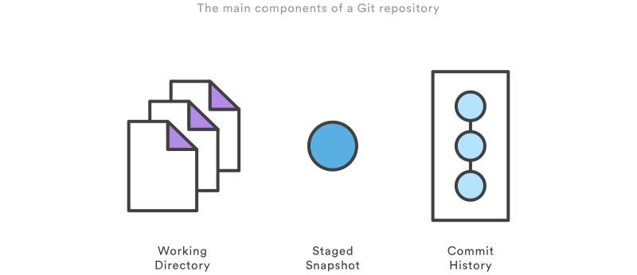
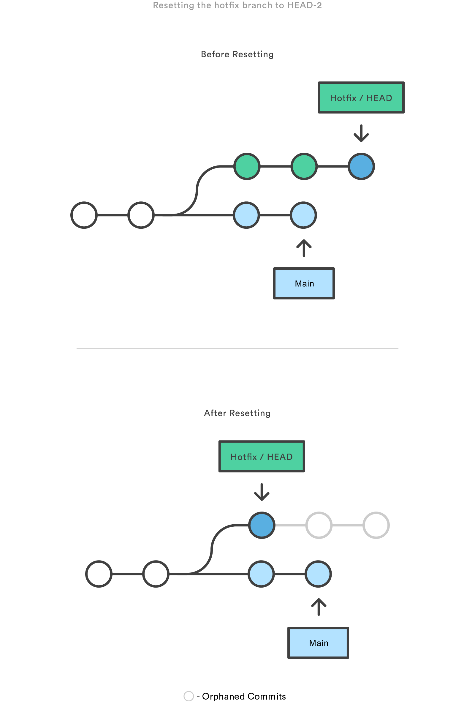
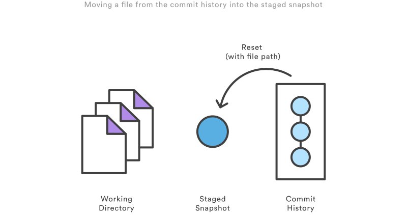

git常用回退操作
概述

如上图所示，一个Git仓库由三部分组成，分别为工作区（Working Directory）、暂存区（Staged Snapshot）和本地仓库提交（Commit History）。
git reset、git revert和git checkout均可以实现版本回退，但三者之间略有差异，且是否传入文件路径也会改变命令功能和应用范围。
因此，根据git reset、git revert和git checkout后面是否传入文件路径，将对应命令的适用范围划分为Commit-level和File-level。
| 命令 | 范围 | 适用场景 |
|---|---|---|
git reset |
Commit-level | 在私有分支上删除提交（commit），或者丢弃未提交的修改 |
git reset |
File-level | 将仓库中的指定文件移回暂存区 |
git checkout |
Commit-level | 切换分支，或者查看旧版本 |
git checkout |
File-level | 删除工作区的修改 |
git revert |
Commit-level | 在公共分支上撤销修改 |
git revert |
File-level | (N/A) |
git checkout和git reset通常用于撤销本地或私有分支上的修改，因为checkout和reset会修改仓库历史记录，在推送到远程共享仓库时可能会发生冲突。而git revert能够安全地撤销远程共享仓库的修改，因为revert在撤销修改时会创建新提交，不会修改之前的仓库历史记录。
Commit Level操作
reset
在commit-level上，git revert可以从当前分支上移除提交（commit）。
以上命令将hotfix分支向后移动两次提交：

如上图所示，执行完git reset之后，在hotfix分支上的最后两个提交将成为孤立提交（orphaned commits），在Git下一次执行垃圾回收时将会被删除，因此git reset的典型应用场景是撤销尚未和其他人共享的修改。
除了会移动仓库中当前分支的HEAD指针，通过git reset的以下选项还可以指定对暂存区和工作区的更新：
--soft：暂存区和工作区不变。--mixed：默认，更新暂存区以匹配指定的提交（commit），工作区不变。--hard：更新暂存区和工作区以匹配指定的提交（commit）。
checkout
git checkout用于将仓库状态更新到历史记录中的特定版本，当git checkout后接分支名时，将会切换分支。
以上命令会将HEAD指针移动到hotfix分支上，并更新工作区以匹配hotfix分支的当前状态。由于该操作有可能会覆盖本地修改，因此Git会强制要求git commit或git stash以防丢失。

类似地，git checkout后接ref可以将工作区更新到特定版本：
实际上git checkout后面无论是分支名还是ref，Git都是将HEAD移动到特定提交上，然后将工作区更新到特定提交的状态。

git checkout和git reset的主要区别在于，checout只会修改HEAD指针并更新工作区，不会修改提交（commit）历史，所有的commit都不会被删除；reset不但会修改HEAD指针，还会修改提交（commit）历史，通过不同参数控制工作区、暂存区和仓库的更新。
如上图所示，git checkout可以很方便地查看旧版本。但此时没有分支指针（branch reference）指向HEAD，如果向HEAD后添加新的提交（commit）并切换到其它分支，将会导致再也无法找回它们。因此在向悬空的HEAD之后添加新的提交之前，应先创建一个新分支。
revert
git revert通过添加新的提交（commit）来撤销提交。这是撤销修改最安全的方式，因为revert不会重写提交历史记录。
以上命令将查找倒数第二个提交的修改，并创建新的提交以撤销这些修改：

不同于git reset，git revert不会修改之前的提交历史，因此git revert适用于撤销公共分支上的修改，而git reset适用于撤销私有分支上的修改。类似于git checkout，git revert可能会覆盖工作区的文件，因此在执行revert之前，Git会强制要求git commit或git stash以防丢失。
File Level操作
git reset和git checkout可接受可选的文件路径作为参数，这将会改变这些命令的功能和作用范围。
reset
当指定文件路径时，git reset会更新暂存区以匹配指定的提交。
上述命令将会获取倒数第二个提交中的foo.py，并放回到暂存区：

git reset通常会撤回到HEAD指向的提交，对于file-level版本的git reset，不存在--soft、--mixed和--hard选项，应用git reset将始终更新暂存区，始终不更新工作区，相当于只有--mixed选项。
checkout
当指定文件路径时，git checkout会直接更新工作区以匹配指定的提交。
上述命令将会获取倒数第二个提交中的foo.py，并放回到工作区：

不同于commit-level版本的git checkout，该命令作用于文件时不会移动HEAD指针，因此也不会切换分支。
git checkout作用于文件时，同样可以用来查看旧版本，只是作用范围限制为指定文件。如果一个文件checkout之后又进行了提交，该操作的效果类似于revert，不同之处在于git checkout会撤销对该文件的所有后续修改，而git revert仅会撤销该文件指定提交的修改。
git checkout也通常应用于HEAD指针，比如git checkout HEAD foo.py将会抛弃foo.py所有未暂存的修改，这有点类似于git reset HEAD --hard，但前者的作用域仅限于指定文件。
git checkout/git reset/git revert/git restore常用回退操作 Resetting, Checking Out & Reverting git的撤销操作：reset、checkout和revert